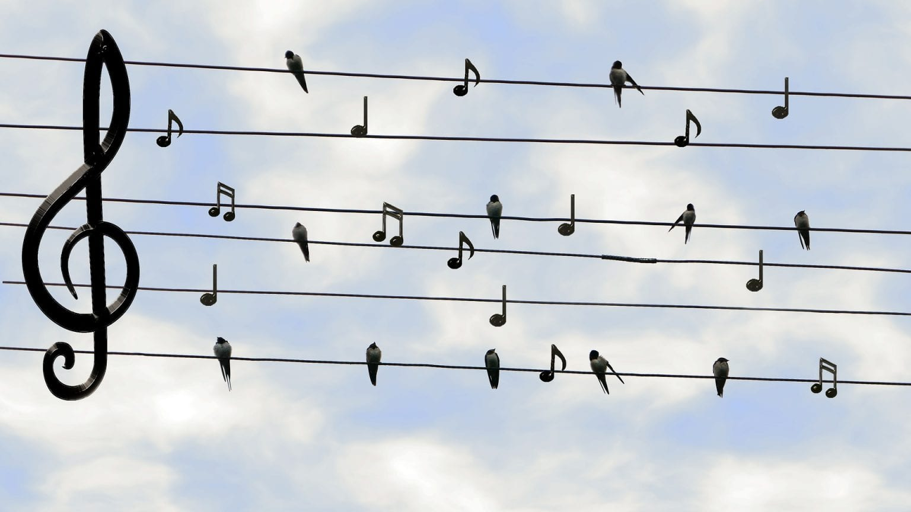
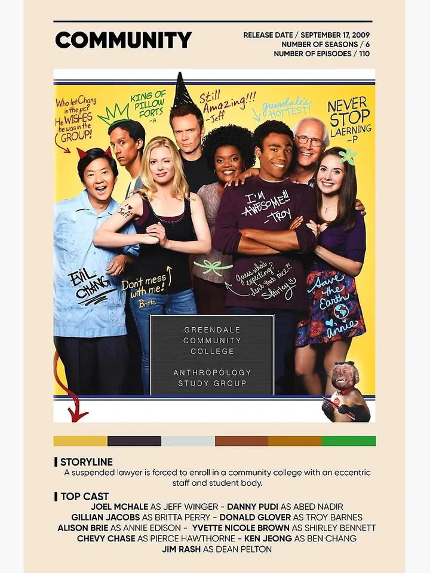

Practice Week 3
Tsing, Anna L. On anthropogenic landscapes, In: A Bestiary of the Anthropocene, edited by N. Nova + DISNOVATION.org
While reading this article, nothing caught my attention right away. Anthropocene was a word I had never heard before and I did enjoy learning about what it means and what are some myths about the definition.
I also found this article difficult to understand. I know that it was about coal mines, fungi, and trees, but I do not understand how they all connect.
I know that the article probably states it a bunch of times and I would just have to re-read everything a few more times to understand. The vocabulary in this was also higher than my understanding and many words went over my head.
A quote that stood out to me more than the other lines was “common sense still tends to push human diversity to something from archaic times, something overcome by process, but diversity today is thoroughly modern, even when it makes use of ancient legacies.”
I do not understand the whole quote, but after a few DuckDuckGo searches and a couple ChatGPT questions I think I know the main point: some people think that diversity is old fashioned but it is actually very important and relevant.
I have no idea how that fits with the coal mine and fungi, but it is an intriguing quote nonetheless. When I first picked the quote, I did not know what it meant, but it stuck out to me mostly because it started with “common sense” and said “but diversity today is thoroughly modern.”
Common sense caught my attention because while attempting to read this, nothing felt like common sense. The other part of the quote that I pointed out felt relevant to our society today. Diversity is a word that I hear every day and thinking about how it has been modernized is an interesting thought.
Throughout the years the word diversity has changed the weight and sometimes meaning, it has changed the same as our society has to stay relevant, and it is probably a word we will always have around.
Wall Kimmerer, Robin. Learning to See, in Gathering Moss: A Natural and Cultural History of Mosses
The quote “how is it possible that I can no longer see what was once so plain” stuck out to me a lot. It is very poetic and yet I have no idea what the author is talking about.
Earlier the author created the metaphor between flying in an airplane to being frozen in time with our “chapters” on pause. Does the quote relate to the comparison because the line before she was talking about a page?
Or is it simply that her vision is going bad from old age while looking at a map or book? After re-reading it a few more times it seems more likely that it is just about her bad vision that was once there and now she lost, but the idea of it being a metaphor still intrigues me.
There are so many other metaphors within the story and there are so many different meanings that it could represent. Maybe her memory is getting old and she is trying to remember things about other people’s lives but can not remember them.
That would go with a line in the first paragraph that says “all our stories escape us except our own.” If that was the case then she could eventually lose her memories too. Other than memories, she could have also meant goals and a purpose for living.
The first quote could mean that she knew what she wanted in life before but now she does not know what she wants or what her goals are. Maybe that is because she fulfilled her dreams and hopes and now has to find a new one.
Maybe her dream is more complicated than what she originally thought and does not know what to do. Maybe she does not remember what her childhood dream was. The possibilities are endless when it comes from this quote.
Practice week 4
Artist Anicka Yi Explains Why COVID-19 Is Terrible for Humanity, But Fundamentally ‘Good for the Planet’
When reading this article the first quote that popped out to me (other than the title) was “Viruses punish winners. If one species becomes too greedy, if one species is too dominant, then it actually needs to go dormant for a while.” All while growing up and including now my father hunts deer. When I was old enough to know that the deer we eat is the deer I see in the fields next to our house and they are animals with feelings and lives, I began to wonder why my father (and most of my family) shoot them. My dad has justified this by saying that if the population becomes too big then diseases will start to spread and then they die a much worse death than a quick bullet. For a few years as a kid I did not like that answer because we are still the cause of their death, but as I grow older, I understand that it is okay for us to kill them when we plan on eating them and preventing them from dying by disease in which case their body can not be used by anything and might get other animals sick. Although I do have to keep reminding myself of this and as much as I love the taste of venison, I could never shoot or skin the deer myself. I have often thought about how humans have overpopulated the world, which brings me to a question I ask myself quite frequently: what would people do if it was any other creature that was overpopulating and causing disturbance in the world the way humans do? With there being few to no natural predators left for humans, our own diseases are now our enemy, trying to get us back to populace that is even to what the Earth can handle.
Gilbert, Scott F., Holobiont by Birth: Multilineage Individuals as the Concretion of Cooperative Processes
“Our mouths are different ecosystems than our intestines, or our skin, or our airways,” was the quote that peaked my interest the most. When I think of ecosystems I think of the different biomes that make up the Earth. I had heard that sloths have a full ecosystem in their fur once or twice and I have been told about the different organisms that live on us, without us knowing. Reading that each of our bodies have about 160 species of bacteria and ecosystems was fascinating. I wonder how many of those bacteria have a mutualistic relationship vs a Commensalism or a parasitic relationship. The main reason I picked this quote is because it got me thinking about an Instagram reel I watched recently about the different temperatures our body needs. Internally, externally, and the food we put in our mouth have all different preferred temperatures that I had never thought of before. Inside our body is 98 degrees Fahrenheit while on the outside of our body 98 degrees is hot. Although 98 degrees is very cold for the food we eat, that is better at temperatures near 130 degrees (depending on the food), but we would die if our internal temperature was that high and we would melt if it was that hot outside. The most comfortable temperature for the outside of our body is probably 70 degrees which would also internally kill us and be way too cold for food. Why does our body regulate temperatures so differently for different areas? Likewise, why can our food be anywhere between 130 degrees to the temperature of our fridge, while our inside body temperature can only move a few degrees, and our external degrees can shift dramatically depending on the amount of clothes we wear? What would life be like if our inside temperature could fluctuate, like our food and outside temperature, without us getting sick?
Practice week 5
Nova, N. + DISNOVATION.org. Selections from A Bestiary of the Anthropocene
Before reading very far I read the line “BEARS, DRAGONS, WILD BOARS, PIGS, LIONS, UNICORNS, WORMS, hedgehogs, butterflies, ravens, such were the creatures one could find in medieval bestiaries.” If you want to get my attention, you just have to mention dragons. Another way to get my attention was to mention pollution, specifically plastic. This article mentioned all three things in the first page! It was honestly hard picking which line to put in.
I had never heard the phrase “canary in the coal mine” before, but the history was interesting. I was a little conflicted when first reading the story. On one hand it was a nice idea to have the canaries check the carbon monoxide levels and they had oxygen bottles, but on the other hand they were using those birds and putting them in danger. Although when I read the miners treated the birds like pets because their lives depended on the birds, it made me feel a little better (only a little).
“Dark ecology” was a new phrase for me too so I looked into it. I like how it is meant to show that nature is not just here for us to take from and needs to be treated more as equals to humans. Another point I agree with is that humans have to take responsibility for our actions and look into the long-term consequences instead of the short-term rewards.
Hiding cell phone towers is a good metaphor for society today: people do not want to see the truth of what we are doing to the planet, so someone comes up with a great idea on how to hide it from us. I am glad that many animals have learned to live with and accept the hidden towers.
This article made me think about how humans live with other living creatures and the environment in a different way. Some ways are good, some ways are not so good, and most of them are more complicated. The only question I can think of is: how did people figure out that the Canaries would stop singing or pass out if the carbon dioxide was too much? If it was just based on their size, why did they specifically use Canaries?
Yolas, Pinar, Ecosystems of Excess, In: Art in the Anthropocene, Davis+ Turpin
“A strikingly illustrative site is the Great Pacific Garbage Patch,” I have written many papers and written a lot about the Great Pacific Garbage Patch. Plastic pollution in the ocean is one of the few topics I will research in my own time. I did not even finish reading the rest of the paragraph before writing this as my quote, I could talk for many pages about this. Although in all my research, I had never heard anyone call the ocean a plastic soup nor the trash mass as kinetic art. Last year I wrote a paper on technologies (some already in use and others were still being created), their purpose is to clean the ocean of plastics. One of these technologies was called a microbiosphere and is supposed to pick up microplastics and spit out a less harmful substance. This technology has not been created yet because the engineers are unsure how to make the microbiosphere do such a thing. They are currently looking into the species that have adapted to plastics like the stomaximus that was mentioned in the reading.
When starting this article I thought that I was going to have already known most of the facts, but I did not know any of this information and enjoyed learning about it. Nurdle being mermaid tears that never go away and the turtles who ate too many balloons and soon became what they ate, were most interesting to me. I would like to talk about whether the mermaid tears are tears of sadness or joy, but I feel like I should not steal the author's question. The balloon turtle still intrigues me and I wonder how they found the turtle. Is this a species that is now living in our ocean? Was it found at random or had someone been studying the turtles? How many other creatures are adapting to the human pollution that we do not know about?
Practice Week 6
When the earth started to sing - David G. Haskell
One quote that stuck out to me was “in modern bird song, we hear the evolutionary legacy of lucky escape from catastrophe, followed by innovation and renewal.” When I hear birds, I think about it being a new day and their song gives me confidence. Never before have I thought about how new their songs actually are to the world. It is more inspiring now that I have paid attention to how much they have endured to be what they are today. It is amazing to think about how different the world would be if the asteroid did not hit the earth or if different creatures died and species evolved differently. The narrator stated that birds might not have the ability to sing, if that were to happen, would people still evolve vocal cords? Would people have evolved at all? Would there be another species that dominated the world? Would they also have a higher iq? Can we say we have a higher iq when we are destroying the world?
That got deeper than I meant it to.
Anyway…
Here is a picture from Jamie Billingham that made me think about the reading:

I liked the beginning of the podcast when David Haskell was talking about sound existing before anything else. I have an audio class that suggested sound is what is heard and without anyone there to hear it, it did not exist. David Haskell said the opposite. It brings me to the famous question, if a tree falls in the forest and there is no one/thing around to hear it does it make a noise? Every time I think I know the answer to the question, I learn or hear about someone else’s thoughts and research and I am again unable to answer the question. Maybe this question is more subjective than I thought when I first heard it.
Kwon, Miwon, One Place After Another: Site-Specific Art and Locational Identity
“Instead, the chapter proposes the idea of community as a necessarily unstable and ‘inoperative’ specter in order to think beyond formulaic prescriptions of community, to open onto an altogether different model of collectivity and belonging.” This was the quote that caught my attention the most. People always say “we as a community…” or “the community thinks/voted…” but the truth is that there is nothing everyone will agree on. The community that we hear so often in which everyone agrees is a false utopian society (or if everyone agreed and no one had any of their own opinions, would that be a dystopian society? That also got deep). Society is unstable and, in some ways, it is inoperative. This is a fact that deep down everyone knows, but we still stereotype the word ‘community’ into meaning everyone thinks the same/agrees. This quote makes you think about the word completely differently, which is one of the purposes of art. This quote used each word specifically for a reason. The way we act as a society is formatic, people have and will continue to create formulas based on our actions. It is eye opening and somewhat depressing that we are so predictable. When the quote states that thinking of the word “community” in this different way, it is a different type of collective and belonging that it brings out in people. This intrigues me. It shows that Even as a community that does not function well together, there is still a place for everyone.
This made me think of the show called Community. If you have not seen it, it is about a group of friends that meet in community college and study together. All the people in it are different, they have different views, beliefs, backgrounds, hobbies, but they are a community. They do not always get along but that is what made them so good together.
